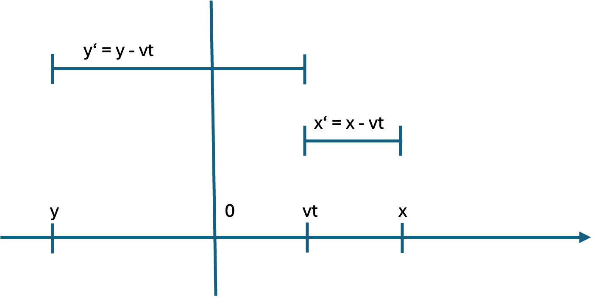
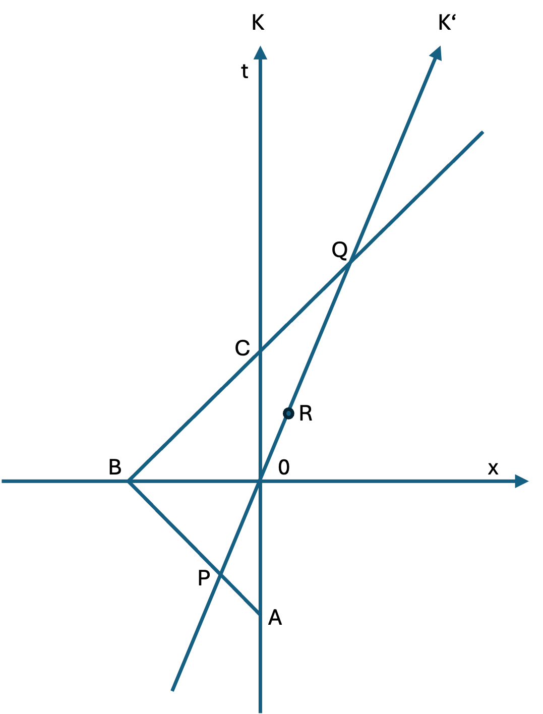
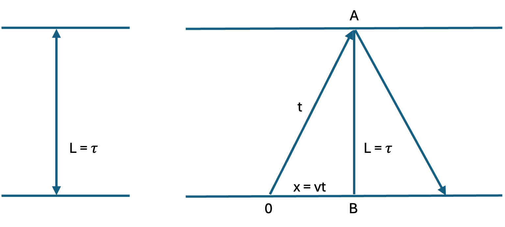

Special Relativity#
Johannes Siedersleben, July 2026
In a Nutshell#
In Newtonian physics, we are familiar with the system of three perpendicular coordinates, designated by \(x\), \(y\) and \(z\). Each point in space can be defined by three numbers, with the origin being arbitrarily fixed.
Special relativity is all about two or more observers or reference frames.
In what follows, we restrict ourselves two one time dimension \(t\) and one space dimension \(x\). This can be easily extended to three space dimensions by using explicit coordinates \(x\), \(y\), \(z\) or by interpreting \(x\) as the vector \(\begin{bmatrix} x \\ y \\ z \\ \end{bmatrix}\). A four-dimensional vector (one time dimension, three space dimensions) can be denoted by
or
Galileo Transformation#
The Galileo transformation relates two reference frames, \(K\) and \(K'\), with \(K'\) moving to the right with respect to \(K\) at a velocity \(v\). Here is the idea:
a) \(K\) and \(K'\) share the same time: \(t = t'\)
b) Consider a point \(x\) in \(K\). As \(K'\) moves to the right, it gets closer to \(x\): It is at \(x' = x - vt\) in \(K'\).
{kind=link}

Fig. 2 Galileo Transformation#
Setting
gives us:
We get immediately
This is the principle of relativity: \(K'\) moving to the right with respect to \(K\) at a velocity \(v\) is indistinguishable from \(K\) moving to the left with respect to \(K'\) at a velocity \(-v\): You cannot tell which train is moving.
There is No Simultaneity#
{kind=link}

Fig. 3 \(K\) and \(K'\) do not agree on simultaneity#
Two observers moving relative to each other cannot agree on the simultaneity of events out there. Look at figure Fig. 3 where \(K'\) is moving with respect to \(K\). A photon starts at \(A\), is reflected at \(B\) and returns to \(K\) at \(C\). Seen from \(K\), the event \(0\) halfway between \(A\) and \(C\) is simultaneous with \(B\). But \(K'\) wouldn’t agree: He meets the photon at \(P\) and then again at \(Q\). So, he would consider the event \(R\) halfway between \(P\) and \(Q\) to be simultaneous with \(B\).
Lorentz transformation#
The Lorentz transformation serves the same purpose as the Galileo transformation: It relates two reference frames, \(K\) and \(K'\), with \(K'\) moving to the right with respect to \(K\) at a velocity \(v\). The difference ist that the Lorentz transformation takes into account the time the light takes to travel between \(K\) and \(K'\). We measure the velocity not in \(m/s\) but in lightyear/year, so \(c=1\) and all velocities are in the interval \([0, 1)\)
a) The speed of light is the same for all observers however fast they move. The Lorentz factor \(\gamma\) is ubiquituous in relativity. It governs, among others, time dilation length contration. The Lorentz transformation \(\Lambda\) is similar to \(G\):
{kind=link}

Fig. 4 Light clock at rest (left), in motion with respect to the observer (right)#
The speed of light is constant. Therefore, given the time, we get the distance travelled, and given the distance, we get the time elapsed. The light clock is a photon bouncing between two parallel mirrors, \(L\) length units apart. We call \(\tau\) the time needed to cover the distance \(L\), and time is measured in multiples of \(\tau\), counting the number of bounces.
On the left of Fig. 4 you see the clock at rest, as seen by a local observer.
On the right of Fig. 4 you see the clock moving to the right at a velocity \(v < 1\) with respect to a remote observer in a direction perpendicular to the bouncing photon. The observer now sees a zigzag: the light travels a greater distance, and more time elapses: the time \(t\) measured by the remote observer is longer that the time \(\tau\) measured by the local observer.
This is almost all there is about time dilation. Let’s get down to the formula.
After time \(t\), the clock will have reached \(B\) at \(x = vt\), and the light will have travelled from \(0\) to \(A\). The length of the hypotenuse \(0A\) equals \(t\), because in \(t\) time units, the light travels \(t\) length units. Pythagoras gives us:
This means: The observer experiences the time \(\tau\) elapsed for the travelling clock as \(t = 1/\sqrt{1 - v^2} > \tau\). With \(v = 3/5\) we get \(t = 5/4\). The fact that \(t > \tau\) is called time dilation. The term \(\tau\) is called proper time. The Lorentz factor, defined as
is ubiquitous in relativity. Here is an important approximation:
The difference is in the order of \(v^4\) which is tiny for small \(v\). Remember that \(v = 1\) is the speed of light. The math is trivial:
The second approximation is similarly handled. Qualifying one clock at rest and the other travelling is arbitrary. The left clock at rest and the right one moving to the right are indistinguishable from the left one moving to the left and the right one at rest.
Now assume the light clock is moving at a velocity \(v(t) < 1\) during the interval \([0, T]\). Partition \([0, T]\) by \(0 = t_0 < t_1 < \ldots < t_n = T\), let \(v_i = v(t_i)\) and \(\Delta t_i = t_i - t_{i-1}\). We get
and, with ever finer partitions, arrive at
Let’s emphasize: \(T\) is the time elapsed for the clock travelling at a velocity of \(v(t)\) as seen by the observer. Let’s \(t\) express in terms of \(\tau\):
The observer experiences the time \(\mathcal{T}\) elapsed for the travelling clock as \(T = \int_0^{\mathcal{T}} \frac{d\tau}{\sqrt{1- v(t)^2}} > \mathcal{T}\): The observer ages faster. How can this be, given that the roles of observer and observed are interchangeable? Here is the answer: As long as they don’t meet, there is no contradiction. Relativity is all about perception, and there is nothing wrong with \(K\) seeing \(K'\) ageing slower and vice versa. The paradox occurs when they meet, and that is not symmetric: One of them must have been accelerating and decelerating; the other one can be assumed to have been at rest. The one who travelled (accelerated and decelerated) is in fact younger than the one who stayed home.